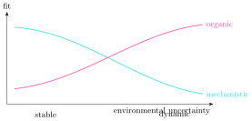

Definition
Contingency theory is a behavioural theory of internal structure, developed in the United States, according to which there is no single most efficient type of leadership or organization: the model to prefer depends on contingent factors, internal and external. Four variants:
Model
| Contingency | Author | Key finding |
|---|---|---|
| Environmental | Lawrence-Lorsch | unstable → organic; stable → mechanistic |
| Strategic | Chandler | structure follows strategy |
| Technological | Joan Woodward | structure must match production technology |
| Dimensional | (from Weber) | size drives specialization and formalization |
Environmental (Lawrence and Lorsch)
Contingent factors: technology, suppliers and distributors, customers and competitors, government, unions — the environment.
- Firms in unstable (dynamic) environments are more productive with a less formalized, decentralized structure, highly differentiated subsystems that are strongly integrated with each other → organic system.
- Firms in stable conditions work better with a rigid, centralized structure and subsystems with clearly separated tasks → mechanistic system.
Strategic (Chandler)
The organizational set-up depends more on the strategy adopted than on environment and technology: firms choose a strategy matching their positioning in the socio-economic context, and the structure follows it (e.g. product diversification → multidivisional structure).
Technological (Woodward)
No direct link between organization and success in general, but a good correlation between vertical structure and production technology. Classes:
| Technology | Structure that fits |
|---|---|
| Unit and small-batch production | organic, few levels, skilled workers |
| Large-batch and mass production | mechanistic, Taylorist — most efficient here |
| Process / continuous flow | organic again, many levels, technical staff |
See also the volume–variety matrix.
Dimensional
Large organizations compared with small ones show: high specialization and professionalization; wide use of planning and programming; high formalization; strong decentralization.
Method
Describe the context (stability, strategy, technology, size) → derive the coordination requirement → choose structure → state the residual cost.
Example
A car-body stamping plant (mass production, stable demand) fits standard methods and centralized planning. The same firm's electric-drive research group (unstable technology) needs lateral communication and delegated decisions. Both coexist if their interfaces are coordinated.
Pitfall
Organic ≠ unstructured; mechanistic ≠ bad. Chandler's claim is "structure follows strategy", not the opposite. Size brings both more formalization and more decentralization.
Recall
Name the four contingencies with author and finding; place Woodward's three technologies with the fitting structure.
Picture

Lawrence and Lorsch: each structure fits a different region of uncertainty.